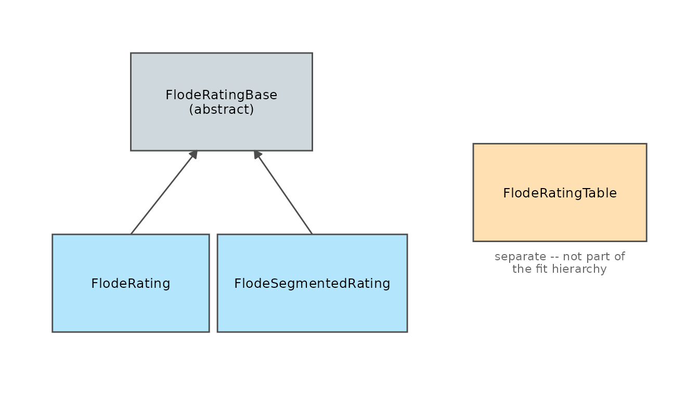

Maintaining reach.rate's S7 classes
Jonathan Payne, Environment Agency Flood Forecasting
November 2026
Source:vignettes/s7_objects_guide.Rmd
s7_objects_guide.RmdAudience: technical. You maintain or extend the package: how the classes are built and how to add an accessor.
Audience: maintainers and contributors. If you use
the package to fit and apply ratings, you do not need this guide: read a
rating through the accessor functions (rating_limbs(),
rating_coefficients(), rating_diagnostics(),
rating_evidence(), rating_support(),
rating_bootstrap(), rating_history() and
rating_provenance()), which are documented in the reference
and used throughout the other vignettes. This guide is for anyone
changing the classes themselves, adding an accessor, or writing a
function that has to accept more than one representation of a
rating.
Why S7 at all
S7 is a typed object
system for R, built jointly by the R Consortium and Posit as a successor
to S4 that keeps S4’s real guarantees (typed properties, validators that
run on construction) with a plainer syntax. What it buys the package is
not cosmetic: a FlodeRating cannot exist in a broken state,
because its validator runs before anyone gets to hold one.
Users never touch the properties directly. They go through accessors, so where the package keeps something is free to change without breaking their code. The properties are an implementation detail that maintainers own, which is why this is the one place they are described.
The class hierarchy

FlodeRatingBase is abstract: it is never constructed
directly, and exists to hold what FlodeRating (the result
of rate_optimise()) and FlodeSegmentedRating
(the result of rate_optimise_segmented()) have in common.
FlodeRatingTable sits apart from that hierarchy entirely.
It is the equation-table representation that the gap-checking functions
and apply_rating() work with, not a fit in its own right,
and it inherits nothing from FlodeRatingBase.
Reading properties as a maintainer uses S7’s functional form, which works the same on every class:
set.seed(1)
stage_m <- seq(0.3, 3, by = 0.1)
discharge_cms <- 5 * stage_m^1.5 * exp(rnorm(length(stage_m), sd = 0.03))
fit <- rate_optimise(discharge_cms, stage_m)
fit # each class has its own print method
#> <FlodeRating> 1 limb(s), origin: independently_fitted, lifecycle: draft
#> converged: yes (1 of 1 limb)
#> valid: yes
#>
#> limb lower_stage_m upper_stage_m C a n rmse_cms
#> <int> <num> <num> <num> <num> <num> <num>
#> 1: 1 0.3 3 5.754582 0.08356371 1.394315 0.3719334
#> r_squared
#> <num>
#> 1: 0.9976098
class(fit) # the full inheritance chain, most-specific first
#> [1] "reach.rate::FlodeRating" "reach.rate::FlodeRatingBase"
#> [3] "S7_object"
S7::prop_names(fit) # every property the class declares
#> [1] "gaugings" "fit_starts" "fit_origin" "lifecycle"
#> [5] "schema_version" "status" "provenance" "previous"
#> [9] "limbs" "bootstrap"
S7::prop(fit, "limbs")[, .(limb, C, a, n)] # one property, by name
#> limb C a n
#> <int> <num> <num> <num>
#> 1: 1 5.754582 0.08356371 1.394315print() gives a one-line summary plus the coefficient
table, in place of R’s default dump of every property.
class(fit) shows the chain,
reach.rate::FlodeRating,
reach.rate::FlodeRatingBase, S7_object,
confirming a FlodeRating is a FlodeRatingBase
underneath.
The table below is what each class holds and which accessor exposes it. When you add something to a class, add it here and to an accessor.
| Property | Held by | Exposed by |
|---|---|---|
| per-limb bounds and equation |
FlodeRating, FlodeRatingTable
|
rating_limbs() |
| per-limb diagnostics and uncertainty | FlodeRating |
rating_diagnostics(),
rating_coefficients()
|
| joint coefficients | FlodeSegmentedRating |
rating_coefficients() |
evidence (a FlodeEvidence: stable
evidence_id, source, inclusion, weight) |
FlodeRating, FlodeSegmentedRating
|
rating_evidence(), rating_support()
|
| bootstrap draws | FlodeRating |
rating_bootstrap() |
fit_origin, lifecycle and previous
version |
all three | rating_history() |
schema_version |
all three | rating_provenance() |
| provenance |
FlodeRating, FlodeSegmentedRating
|
rating_provenance() |
| per-attempt multi-start record |
FlodeRating, FlodeSegmentedRating
|
summarised in rating_diagnostics()
|
Validators: what you cannot accidentally build
Constructing one of these classes with something structurally wrong fails immediately, with a specific error, rather than producing an object that only breaks later when some downstream function trips over the missing piece.
FlodeRating(
limbs = data.table(limb = 1, C = 1, a = 0, n = 1), # missing lower_stage_m/upper_stage_m
gaugings = data.table(discharge_cms = 1, stage_m = 1)
)
#> Warning in set(dt, j = col, value = value): Tried to assign NULL to column
#> 'metadata', but this column does not exist to remove
#> Error in `colnamesInt()`:
#> ! argument specifying columns received non-existing column(s): cols[15]='metadata'That error fires at construction time and names exactly which columns
are missing, not three functions later as an obscure NULL.
Every exported class validates its own structural requirements (required
columns, C and n positivity, contiguous limb
bounds, and more) the same way. When you add a property, add its
validation in the same change.
S7_inherits(): accepting either representation
Several exported functions (plot_rating_cross_section(),
apply_rating_inverse(), graft_rating() among
them) accept either a FlodeRating or a
FlodeRatingTable and quietly bridge the former to the
latter internally. S7_inherits() is how they tell which one
they were handed, and it is the right check in your own code:
S7::S7_inherits(fit, FlodeRating)
#> [1] TRUE
S7::S7_inherits(fit, FlodeRatingBase) # also TRUE: FlodeRating IS a FlodeRatingBase
#> [1] TRUE
rating_dt <- data.table(lower_level = 0, upper_level = 3, C = 5, a = 0, n = 1.5)
tbl <- FlodeRatingTable(table = rating_dt)
S7::S7_inherits(tbl, FlodeRating) # FALSE: a table is not a fit
#> [1] FALSE
accept_either <- function(x) {
if (S7::S7_inherits(x, FlodeRating)) "got a fit" else if (S7::S7_inherits(x, FlodeRatingTable)) "got a table" else stop("neither")
}
accept_either(fit)
#> [1] "got a fit"
accept_either(tbl)
#> [1] "got a table"inherits(x, "FlodeRating") does not work
reliably, because S7 classes are namespace-qualified
("reach.rate::FlodeRating", visible in the
class(fit) output above). S7_inherits() checks
against the class object itself, so there is no string to get wrong.
The amendment chain
Every class carries how it came to be (fit_origin),
where it stands in review (lifecycle, which the package
leaves at "draft": approval is a person’s decision) and a
link to the version it was amended from, so amending a rating never
silently loses what it was amended from. Users read the whole chain with
rating_history():
rating_dt <- data.table(
lower_level = c(0, 1.5), upper_level = c(1.5, 3),
C = c(3, 5), a = c(0, 0.1), n = c(1.5, 1.6)
)
tbl <- FlodeRatingTable(table = rating_dt)
aligned <- align_limb_equations(tbl)
rating_history(aligned)
#> step class fit_origin lifecycle n_limbs note
#> <int> <char> <char> <char> <int> <char>
#> 1: 1 FlodeRatingTable independently_fitted draft 2 <NA>
#> 2: 2 FlodeRatingTable post_fit_aligned draft 2 <NA>
identical(S7::prop(S7::prop(aligned, "previous"), "table"), S7::prop(tbl, "table")) # the exact object it was built from
#> [1] TRUEThe previous version is not a copy or a re-derived approximation: it is the literal pre-amendment object. Chain several amendments and the history grows by one row each time, until the oldest row, the original independently-fitted or independently-built starting point. This is what the user guide means by “an audit trail by construction rather than by discipline”: there is no code path that produces an amended table with nowhere to point its previous version at. Any new function that amends a rating must set it.
Shared generics: one name, dispatched by class
Several functions work identically whichever class you hold, because they are S7 methods registered against shared generics, not separate functions per class:
rating_plot(fit) # works on FlodeRating and FlodeSegmentedRating
apply_rating(fit, stage_dt) # FlodeRating, FlodeSegmentedRating, FlodeRatingTable
as_rating_table(fit) # converts a fit to FlodeRatingTable
rating_limbs(fit) # and the other accessors: see belowS7’s method dispatch picks the registered implementation for whatever class the object actually is. That is the payoff of the hierarchy: it is what makes “call the same function regardless of representation” work.
Adding an accessor
The accessors follow one pattern, so a new one should too.
-
A generic with a method per class, defined in
R/accessors.R:new_generic("rating_thing", "x"), then one method for each ofFlodeRating,FlodeSegmentedRatingandFlodeRatingTablewhere the information exists, and a method forclass_anythat refuses anything that is not a rating. -
Say so where the class has nothing to give. A class
that does not hold the information raises an error that names the class,
says why, and says what to use instead (see
.accessor_not_held()), rather than returning an empty table that looks like an answer. - Return a copy. Changing the result must never change the rating.
-
Unit-suffixed columns (
_m,_cms,_pct) in adata.table, or a documented list. Uncertainty that was not computed isNA, never zero. -
Document it on the generic’s own block. roxygen
cannot name a call of the form
method(generic, Class) <- function(...), so documentation written above a method is silently dropped and never reaches the reference. This has already cost the package a missing example and the missing argument documentation forapply_rating(). Put the arguments, the return value and the examples on the generic, and mark a method’s comment block as not for the reference (the no-Rd tag). - Test it on every class, for success and failure: the shape and values on a hand-built rating where the answer is known, the failure message for each class that cannot answer, and that the result is a copy.
Tests may read properties directly where they are testing the class itself. Documentation, vignettes, examples and the README must not.
Where to go next
-
vignette("rating_curves_guide"), the user-facing account of the same objects in context, and the running example the other vignettes build on. -
?FlodeRatingBase,?FlodeRating,?FlodeSegmentedRating,?FlodeRatingTablefor the full property reference of each class. -
?rating_limbsand the other accessor pages for what users see. - S7’s own documentation for the object system itself, independent of this package.